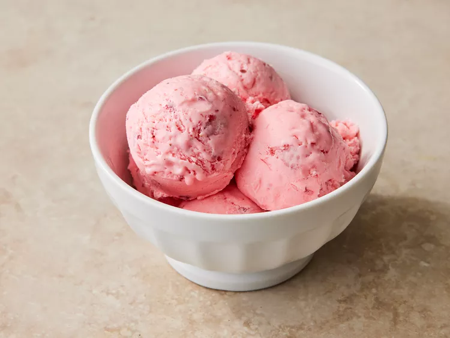

Easy Strawberry Ice Cream

How to Make Strawberry Ice Cream
You'll find a detailed ingredient list and step-by-step instructions in the recipe below, but let's go over the basics:
Strawberry Ice Cream Ingredients
These are the simple ingredients to make this homemade strawberry ice cream recipe:
:
- Strawberries: This homemade ice cream starts with two cups of mashed fresh strawberries.
- Milk and cream: Whole milk and heavy cream are essential to this rich homemade strawberry ice cream.
- Sugar: You’ll need a cup of white sugar for this sweet, fruity dessert.
- Vanilla extract and salt: Vanilla extract and salt enhance the overall flavor of the strawberry ice cream.
How to Make Homemade Strawberry Ice Cream
Here’s a brief overview of what you can expect when you make strawberry ice cream at home: Combine all the ingredients in a large bowl, transfer the mixture to the freezer bowl of an ice cream maker, and freeze according to the manufacturer’s directions.
Ingredients
- 2 cups mashed fresh strawberries
- 2 cups whole milk
- 2 cups heavy cream
- 2 cup white sugar
- 2 teaspoons vanilla extract
- ¼ teaspoon salt
Directions
- Gather all ingredients.
- Combine strawberries, milk, cream, sugar, vanilla, and salt in a large bowl.
- Pour strawberry mixture into the freezer bowl of an ice cream maker; freeze according to the manufacturer's directions.
- Transfer to an airtight container and freeze until firm.